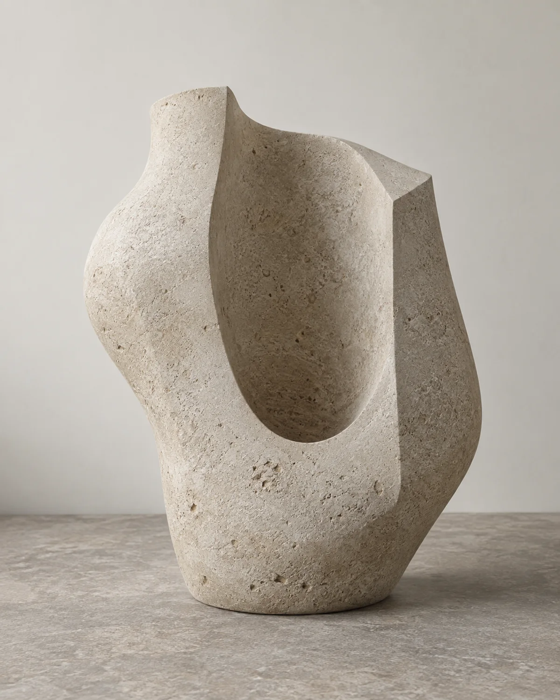

Observe the relation.
Begin with an opening, a fold, an edge, or a contact point. Look for the simplest relationship that can make the form feel particular. A useful starting point can be described without a long explanation.
An original artist-studio concept exploring how a form can feel grounded, open, and unresolved at the same time.

Does it hold an opening, interrupt a line, or bring two surfaces into contact? Sable begins with that small question. The material direction follows, changing the way the relationship is perceived.
The three studies shown here are original generated images. They are not photographs of physical artworks, and the studio is fictional. The work combines image direction, formal interpretation, and a clear account of what remains imagined.
That boundary matters. It gives the images room to function as studies while avoiding claims about fabrication, editions, or completed commissions.
Begin with an opening, a fold, an edge, or a contact point. Look for the simplest relationship that can make the form feel particular. A useful starting point can be described without a long explanation.
Limit the number of materials and formal moves. Let proportion, light, and surface carry the difference. When every element has a reason to remain, the object becomes easier to read.
A generated image can test a visual direction, but it does not complete a physical object. Keep the unresolved questions visible: structure, scale, fabrication, setting, and the way someone might encounter the work.
The collection is an original visual exploration. There are no real works for sale, no numbered editions, and no claim that a physical commission has been made. The inquiry tool prepares an unsent draft so a visitor can put a new direction into words.
Begin with a material, a setting, or a question. The commission page turns that thought into a local draft.
Start a commission draft ↗